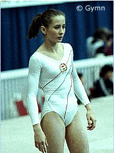

Beata Storczer (HUN)

5th FX, 1988 Olympic Games
Beata was born on July 10, 1969
in Budapest. She trained at Budapest Spartacus Club with coaches Zisis
Tanasis and Jozsef Lukacs (from 1985). In 1990, she married Olympic pentathlete
Janos Martinek (winner of 2 golds in Seoul and a bronze in Atlanta). They have a daughter, Patricia.
Competition Results
- 1981
- Antibes International: 14th AA
Hungarian Youth Championships: 2nd AA, 1st V, 1st UB, 1st FX
Kosice Cup: 14th AA
1983
Budapest Championships: 1st AA, 1st B, 1st FX, 2nd UB
Hungarian Youth Championships: 2nd AA, 1st UB, 1st FX
Jr. Competition of Socialist Capitals: 2nd Team, 1st FX
Jr. Friendship Tournament (Druzhba): 3rd Team
-
- 1984
- CSSR Spartakiade (Olomouc): 16th AA
- Jr. European Championships: 9th AA, 4th FX
Jr. Friendship Tournament (Druzhba): 6th Team
Jr. Hungarian Championships: 1st AA, 1st FX, 2nd UB
-
- Masters Championships: 1st FX, 3rd UB
Ontario Cup: 6th AA
-
- 1985
- Blume Memorial: 12th AA
European Championships: 13th AA, 8th FX
- World Championships: 8th Team, 25th AA
-
- 1986
- Ahoy Cup: 17th AA
Belgian Gym Masters: 10th AA
- HUN-FRG Dual Meet: 6th AA
ITA-HUN Dual Meet: 1st Team, 1st AA
-
- 1987
- Athens International: 7th AA, 3rd FX
- AUT-HUN Dual Meet: 1st Team, 1st AA, 1st FX, 2nd UB
Blume Memorial: 10th AA
- European Championships: 14th AA, 4th FX
- HUN-NED-GDR Tri-Meet: 2nd Team, 5th AA
Hungarian Championships: 1st AA, 2nd UB
- Kosice International: 6th AA, 1st FX, 4th UB
- World Championships: 7th Team, 24th AA
-
- 1988
- American Cup: 4th AA
Blume Memorial: 5th AA, 4th UB, 6th FX
Hungarian Championships: 1st AA, 2nd FX
- Hungarian International: 3rd AA
- Hungarian Masters: 4th AA, 2nd FX, 3rd UB
- Intl. Mixed Pairs: 8th AA
- Mezobank Cup: 2nd Team
- Olympic Games: 8th Team, 23rd AA, 5th FX
-
- 1989
- European Championships: 15th AA, 8th UB
French International: 6th AA
HUN-CSSR Dual Meet: 5th AA
-
- 1990
- Bosphorus Cup: 7th AA
Catania Cup: 5th UB
- Masters Championships: 6th AA, 2nd FX
1994
Palota Aerobics Cup: 2nd AA
1996
Hungarian Sports Aerobics Championships: 1st AA
This page was last updated on January 13, 2022.
© Gymn Forum